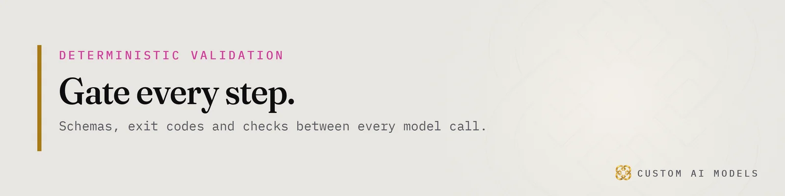
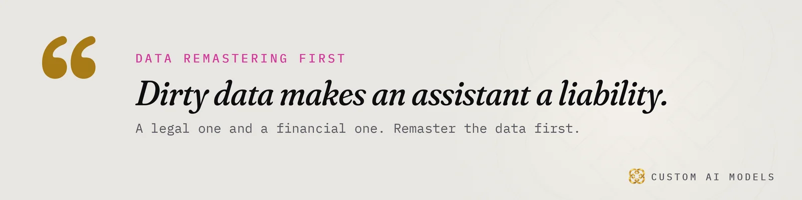
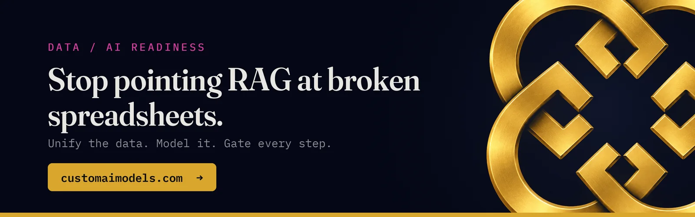

Custom AI Models
Custom AI Models Yeriko Vargas · Founder, Custom AI Models · Oct 2026
Yeriko Vargas · Founder, Custom AI Models · Oct 2026Why your AI demo breaks on real business data
You ran the demo. It answered well. Then you pointed it at your real files and it started inventing things.
Founders and operators tell me this story all the time. The model is rarely the cause. It did what models do. It read what it was given and wrote fluent text. What it was given was the problem.
The model is a commodity. Everyone rents the same ones. What you cannot rent is clean, unified, governed data, plus a way to prove that each step worked. That is where production AI lives or dies.
I have spent 8.5 years in data, and Custom AI Models has been building since 2022. The order has never changed. Unify the data. Model it. Gate every step. Put the model last.
Most demos that break did it backwards. They started with the model, bolted on a prompt, and hoped. This article is about the part they skipped.

AI data readiness starts with unifying the data
Look at where your business actually keeps its facts. Spreadsheets someone owns. Inboxes. A CRM export from last quarter. A shared drive with three versions of the same price list.
Each source tells a slightly different story. One calls a customer "Acme Co". Another calls them "ACME Company". A third has no name, only an email address. A human reconciles that in their head. An assistant does not. It picks one, or it blends them, and it sounds sure either way.
That is why AI data readiness comes before any model choice. It is the unglamorous job of data remastering: take the scattered sources, agree on one record per real thing, and write down which source wins when they disagree.
Dirty data makes an assistant a legal and financial liability. A wrong quote, a wrong balance, a wrong promise to a customer. The assistant does not know it is wrong. You find out later, from the customer.
I wrote about what this looks like in practice in what replacing four spreadsheets actually took. The model was never the hard part. Registration, retention, and who is allowed to see what took the time.
Model the data so the assistant cannot guess
Unified is not the same as modeled. A pile of clean rows is still a pile.
Modeling means deciding what things are and how they relate. A customer has orders. An order has line items. A line item points to a part. Each field has a type, a meaning, and a rule for what counts as valid. Put that in SQL tables and JSON schemas, not in somebody's memory.
Once the shape is explicit, the assistant stops guessing. It queries a structure instead of interpreting a blob of text. Where a field is missing, the system says so. It does not fill the gap with a plausible sentence.
Modeling also settles access. Not everyone should see every record. Payroll is not sales. A contractor is not a partner. Build RBAC into the data layer, so the rules hold no matter which tool asks. If permissions live only in the prompt, they are suggestions.
Then decide retention. What gets kept, for how long, and who can delete it. These questions feel like paperwork until the day they are not.

Deterministic validation gates on every step
Now the part that makes AI safe to run unattended. Treat every model output as a claim. A claim is not a fact until a check proves it.
The check must be code, not another opinion. That is what I mean by deterministic validation gates. The output either matches the schema or it does not. The total either equals the sum of its lines or it does not. The script exits zero or it exits non-zero. No judgment, no mood.
The plumbing is plain on purpose. Python runs the steps. Webhooks move events between systems. Resend sends the email. Cloudflare sits at the edge. Each step ends in an exit code, and the next step only starts if the last one passed.
I go deeper on this pattern in twelve tools, one Python pipeline, where every call to Claude, ChatGPT or Gemini is treated as a claim until a check proves it.
Gates also give you telemetry. Every pass and every failure is logged. You see which step fails most, on which input, and since when. That is how you catch data drift early. The source changes shape, a vendor renames a column, and the gate trips before a customer notices.
A failed gate is not a bug in the process. It is the process working.
RAG for business data comes last, not first
Here is where retrieval finally belongs. RAG for business data is a good idea when the data underneath is unified, modeled and permissioned. Retrieval over broken spreadsheets only finds the breakage faster.
Stop pointing RAG at broken spreadsheets. Fix the layer below it, then let the model read from something it can trust.
Even then, retrieval is an architecture, not a feature. It needs evaluation and telemetry around it, or you will not know when quality slips. I covered that in RAG isn't a feature. It's an architecture.
Before you build anything, ask five questions:
- Can you name the one source of truth for each kind of record?
- Does every field have a type and a rule for what is valid?
- Do access rules live in the data layer, not in a prompt?
- Does every step end in a check that can fail?
- Would you know within a day if a source changed shape?
If you answered no to any of them, the model is not your next move. The data is.
That order feels slow at the start. It is faster than rebuilding a pilot that lied to a customer. The model you pick matters least, and you can swap it later. The data, the schemas and the gates are what you keep.
